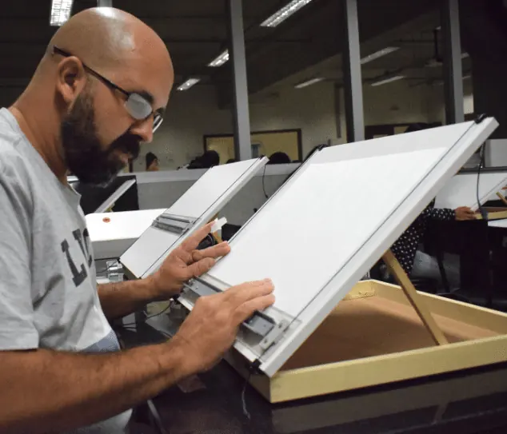

Uma das melhores universidades de São Paulo, também em Sorocaba.
A integração entre a tradição da Athon Ensino Superior e o prestígio nacional da Universidade Anhembi Morumbi.
Essa parceria inédita consolida uma verdadeira referência em educação superior de excelência, no interior de São Paulo.
Com os renomados modelos educacionais da Anhembi Morumbi, nossos cursos, que são reconhecidos com as melhores notas nas avaliações do MEC, e o nosso curso de Direito, o único em Sorocaba e região recomendado pela OAB Nacional em 2024, proporcionam experiências ainda mais transformadoras e formação de ponta.
Nosso foco é no desenvolvimento e na formação de líderes diferenciados, com acolhimento e uma equipe docente totalmente qualificada e empenhada em oferecer o melhor para os nossos alunos. São inúmeras oportunidades para você protagonizar o futuro, com inovação contínua, empregabilidade elevada, parcerias internacionais e um diploma com reconhecimento nacional.
Se os seus desejos de formação são os mesmos que os nossos, sinta-se em casa. Vem construir o futuro com a gente e faça parte dessa parceria de sucesso! Bem-vindo(a) à Anhembi Morumbi Sorocaba.

Somos um centro de excelência apto a desenvolver habilidades e competências que formam uma liderança capaz de ocupar posições de destaque nos mercados nacional e internacional, através de nossa expertise ampliada, que é a capacidade de atrair e juntar inteligência, para potencializar a construção conjunta do conhecimento atualizado, num mundo sempre novo.
Potencializamos capacidades para que nossos alunos desempenhem uma liderança significativa no mundo e na vida das pessoas.
Queremos ser reconhecidos pela nossa capacidade de formar líderes diferenciados, inovadores e capazes de transformar a realidade.

Sete laboratórios por área, três estúdios de produção e seis salas mantidas por empresas parceiras. Tudo na Rua da Penha, a cinco minutos do centro.


 Ver as 23 fotos
Ver as 23 fotos
Uma história construída com foco na prática, parcerias com o mercado e a constante evolução da nossa identidade para formar profissionais prontos para o mundo real.
Conheça nossa históriaFormar líder não é promessa de folder. Veja onde está quem saiu daqui.

Atuo com marketing digital, analytics e métricas há mais de 10 anos, e posso dizer que a faculdade tem papel fundamental na minha carreira.

A grade curricular trazia matérias alinhadas com a realidade do Direito, o que permitiu uma formação mais abrangente e o contato com áreas ainda em expansão.

O curso me proporcionou uma oportunidade de estágio em uma empresa multinacional, onde consegui colocar em prática todo o conhecimento adquirido ao decorrer da graduação.